Plan
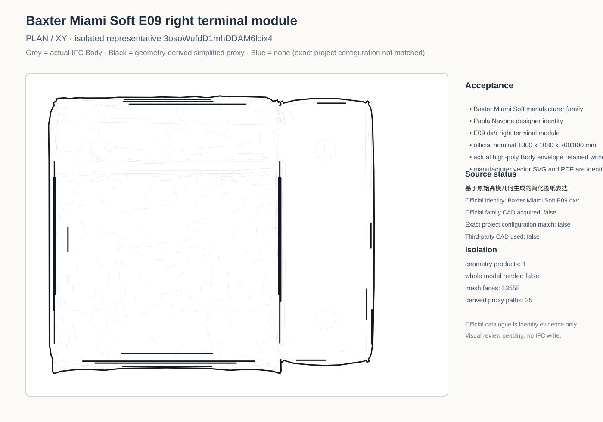
Grey = actual IFC Body; black = prior 基于原始高模几何生成的简化图纸表达 for comparison; solid blue = mechanically selected E09 native Plan/Front/Side from Baxter's official DWG. Blue stays 1:1 and receives rigid reviewed placement only; Side additionally uses the documented view-direction reflection. The official hidden roller line is dashed.

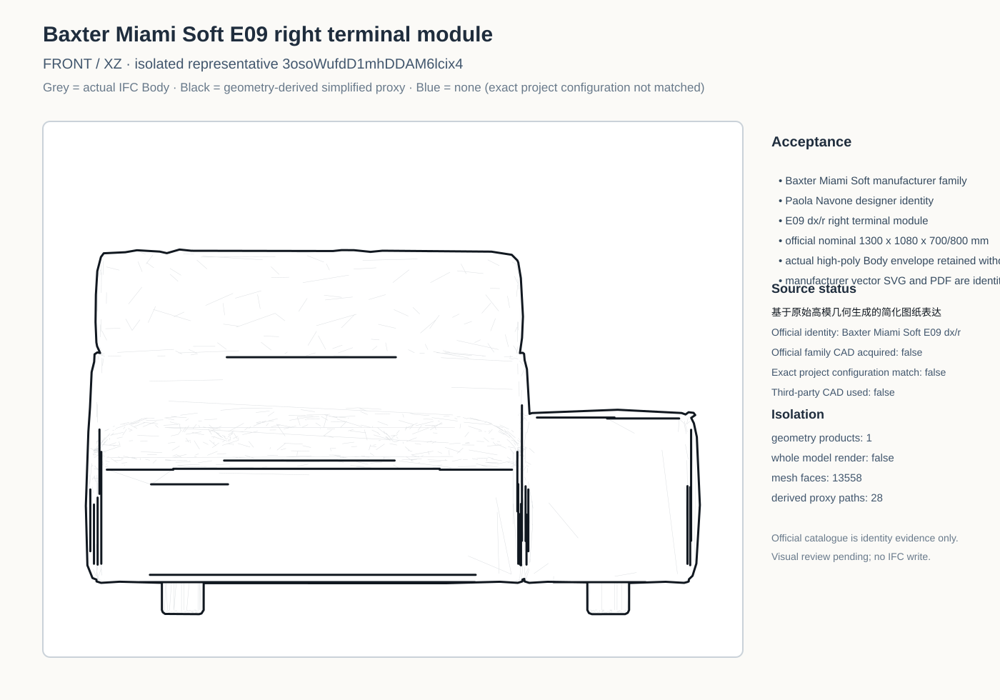
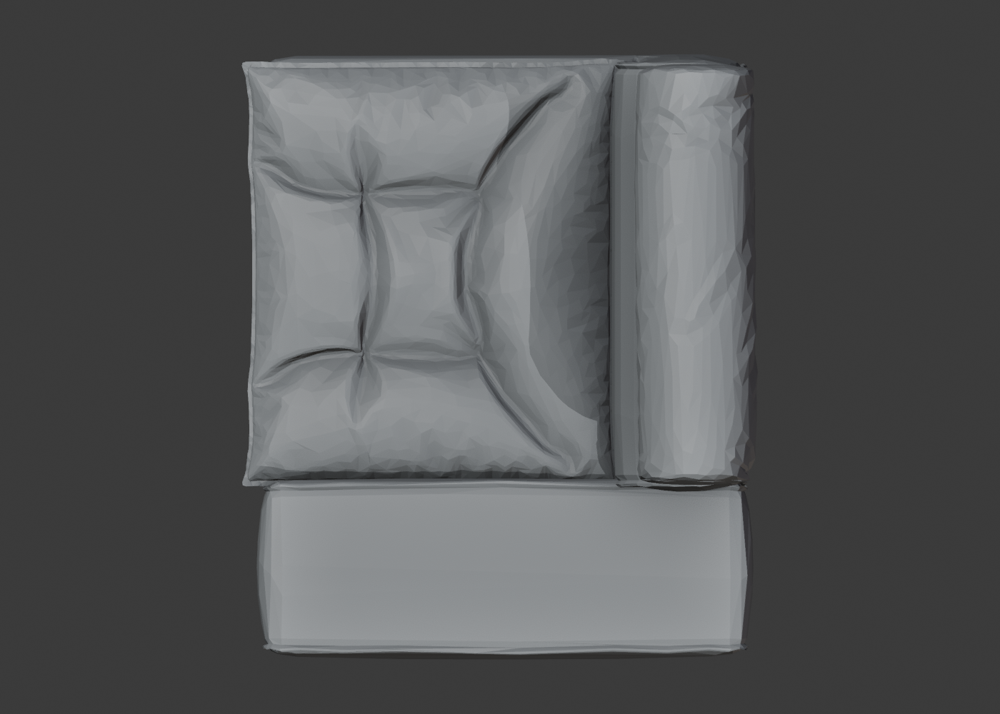
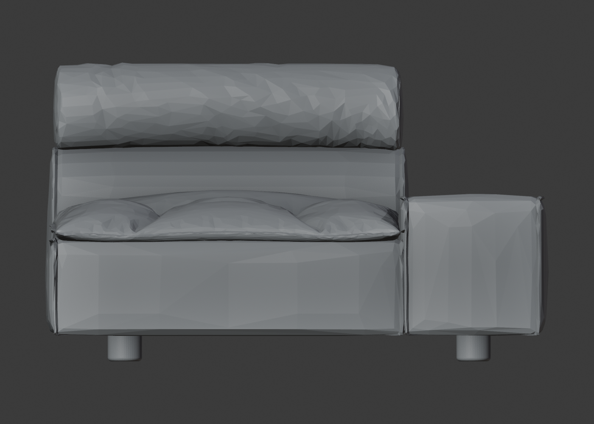
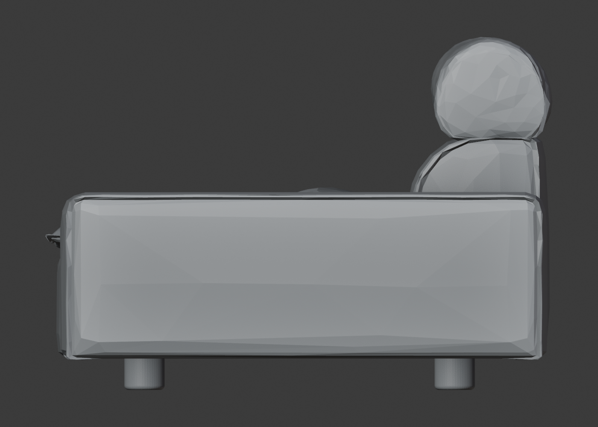
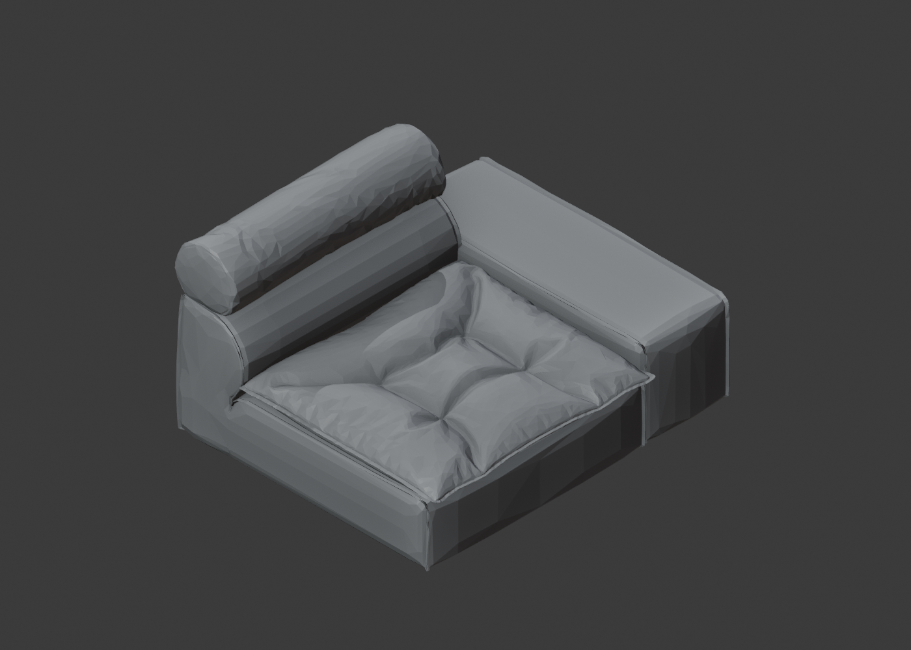
Blue is the exact official E09 native DWG placed at the representative instance world transform; project drawing context is light grey and the current actual IFC Body is lighter grey. These two files are review-only project-context overlays, not Bonsai scene Drawing SVGs.
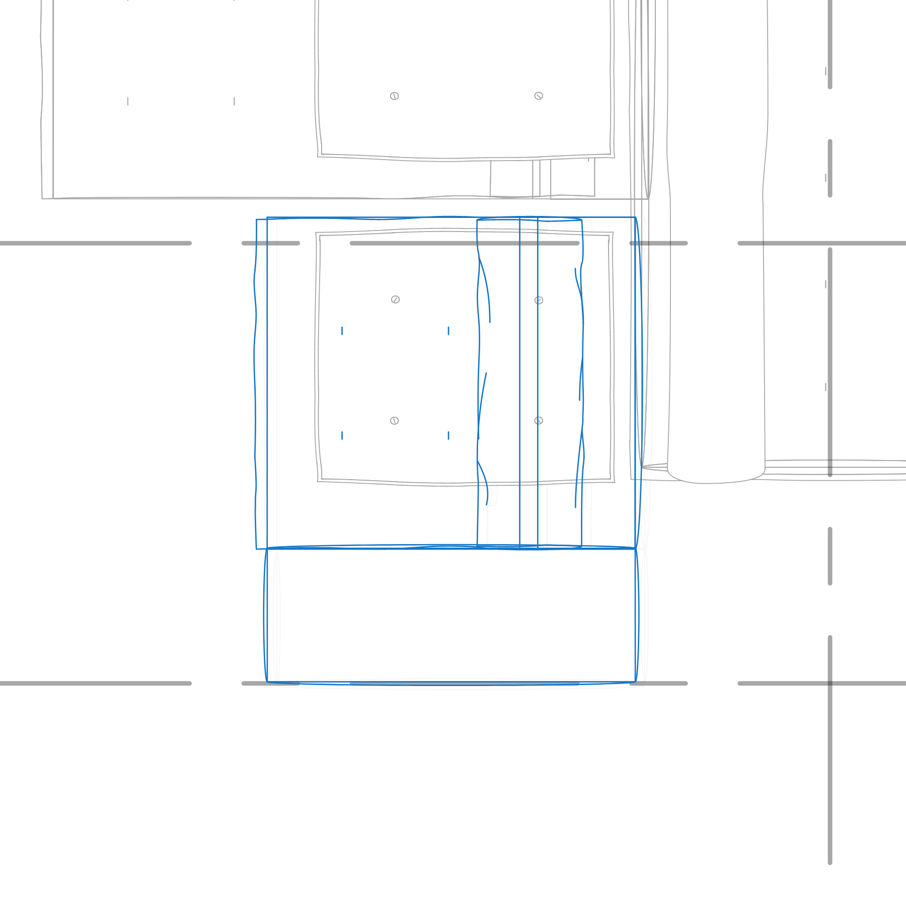
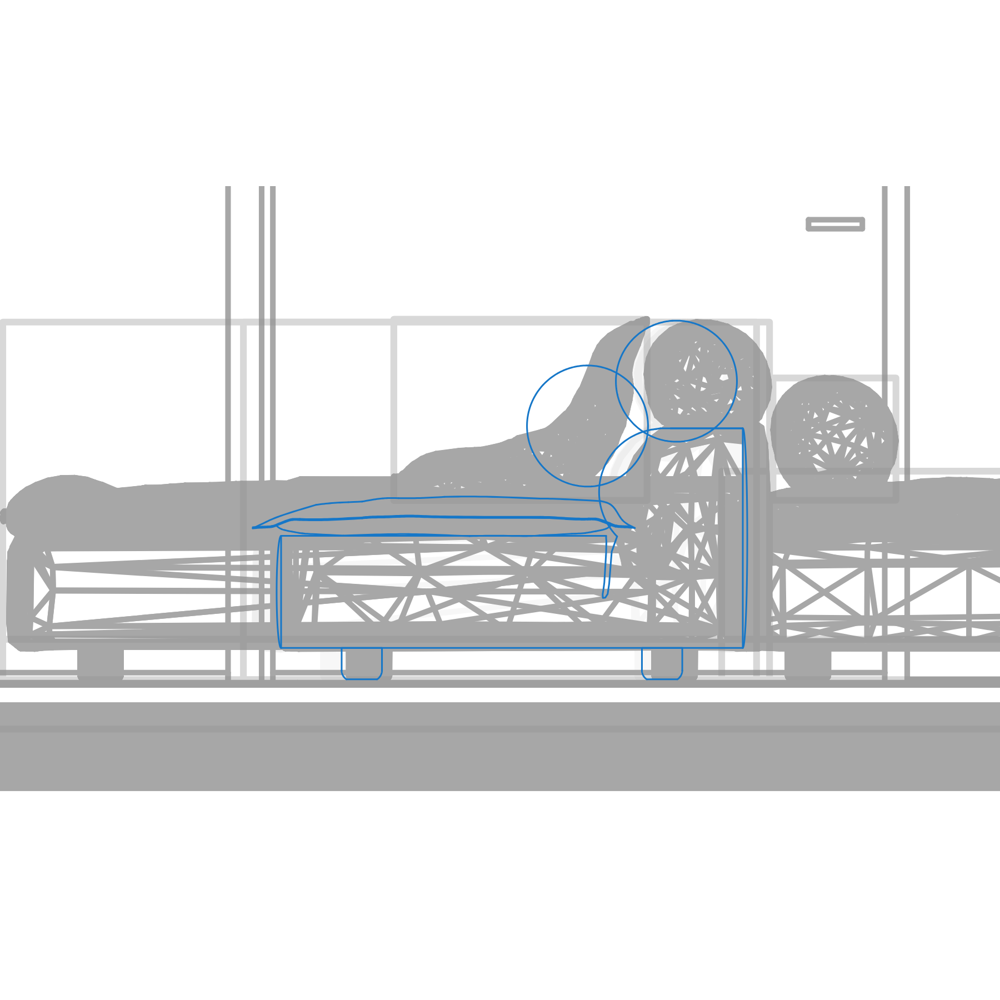
The official E09 Plan/Front/Side linework is persisted in the product-level derived IFC at the representative project placement. The current high-poly body's local foot and bolster offsets are accepted and no component-by-component force-fit was applied. The target Body is excluded from the Drawing Include selector to prevent double projection. Official hidden handle 1115B is dashed in Side. The formal authoritative IFC was not written.
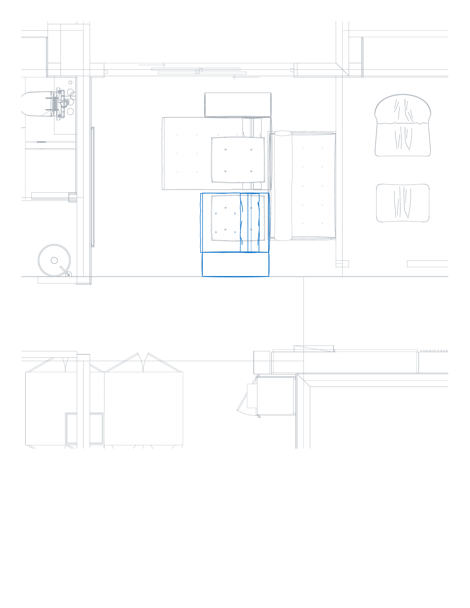
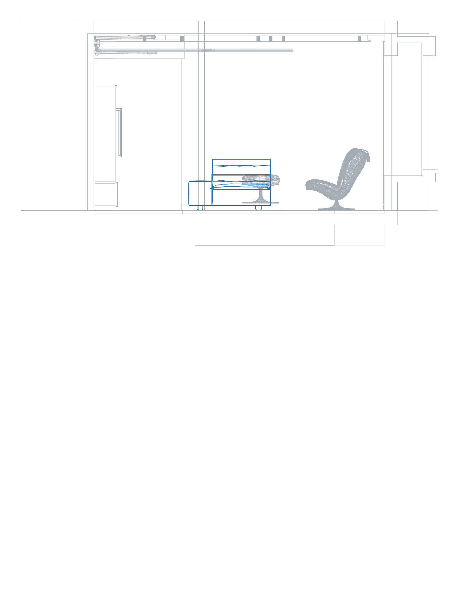
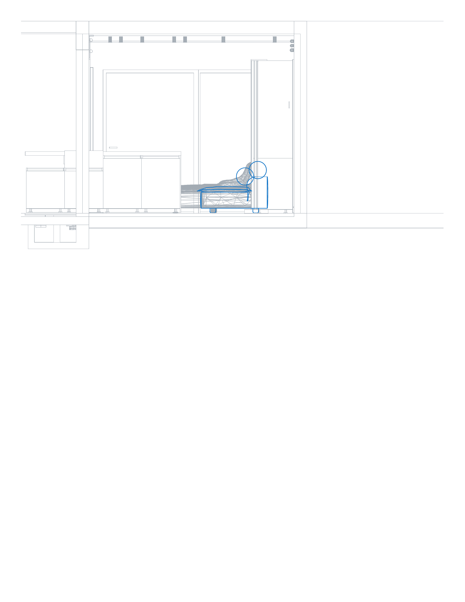
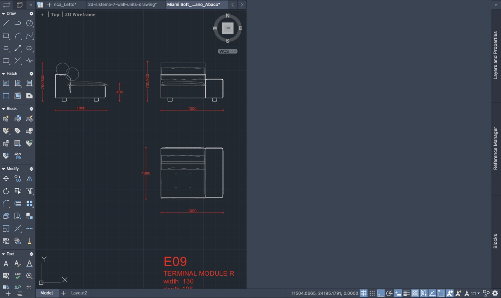
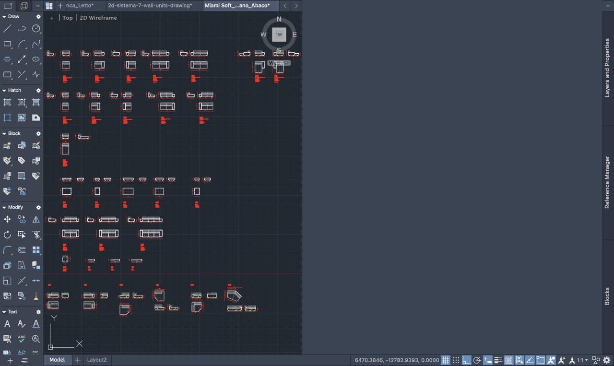
Formal IFC SHA-256: 7a50b87e8f48a7c2bfbaa9f1dabdfca7155fa684b2325c66aa1ae15c8ab0a25c. Product-level derived IFC written; formal authoritative IFC unchanged.